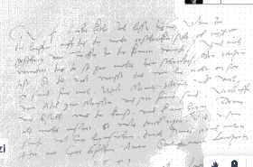
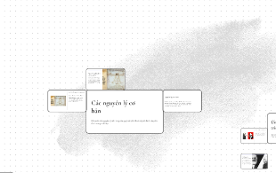
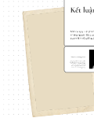
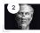
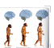
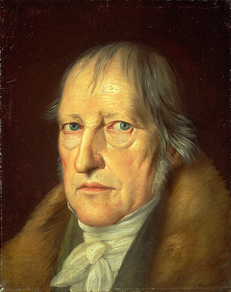

Quy Luật Phủ Định Của Phủ
Định
Khám Phá Những Nguyên Tắc Cơ Bản Của Triết Học
Vị trí Quy Luật Phủ Định Của Phủ Định
Quy luật này chỉ ra khuynh hướng, hình thức và kết quả của sự phát triển. Nó hoàn thiện bức tranh biện chứng cùng với 2 quy luật: Mâu thuẫn (nguồn gốc) và Lượng - Chất (cách thức).

Định nghĩa Quy luật Phủ định Biện chứng
Là sự phủ định tự thân, có tính khách quan và tính kế thừa. Phủ định biện chứng đóng vai trò là mắt xích trong sợi dây chuyền nối cái cũ với cái mới, kế thừa hạt nhân hợp lý.
Tiến Trình Phát Triển Tự Nhiên & Tư Duy
Sự phát triển không diễn ra theo đường thẳng mà trải qua các giai đoạn chuyển hóa liên tục từ sinh học đến ý thức xã hội.

Các nguyên lý cơ bản
Hai thuộc tính cốt lõi chi phối toàn bộ tiến trình phủ định biện chứng trong mọi sự vật hiện tượng:
Kế thừa: Biện chứng vs. Siêu hình
Phân tích và đánh giá
Quá trình hoàn thành một chu kỳ phát triển tối thiểu trải qua hai lần phủ định:
Khẳng định
Cái ban đầu
Phủ định 1
Cái đối lập
Phủ định của PĐ
Tầm cao mới
Quy Luật Vận Động Theo Đường Xoáy Ốc
"Sự phát triển dường như lặp lại cái cũ, nhưng trên cơ sở cao hơn." — §754
Ứng dụng trong triết học
Từ triết học cổ đại Hy Lạp (Heraclitus, Socrates) qua phép biện chứng duy tâm của Hegel, đến phép biện chứng duy vật Mác-Lênin.

G.W.F. Hegel (1770–1831)Ví dụ tự nhiên: Hạt lúa (§755)
Hạt thóc giống (Khẳng định) ➔ Cây lúa non (Phủ định 1) ➔ Bông lúa trĩu hàng trăm hạt (Phủ định của phủ định).
Ví dụ công nghệ: Điện thoại thông minh
Điện thoại bàn/phím bấm ➔ Smartphone cảm ứng ➔ Thiết bị AI & Không gian: kế thừa tính di động và kết nối ở cấp độ vượt trội.
Kết luận
Quy luật phủ định của phủ định khẳng định tính tất yếu của sự tiến bộ. Sự phát triển diễn ra thông qua quá trình chuyển hóa liên tục và có tính kế thừa lịch sử.
"Sự phát triển theo đường xoáy ốc chứ không theo đường thẳng."
— V.I. Lênin4 Ý nghĩa phương pháp luận (§758–761)
Giao Lưu & Mini Game Quiz
Quét mã QR để tham gia Mini Game trực tuyến cùng nhóm thuyết trình!